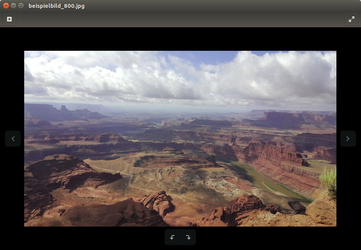
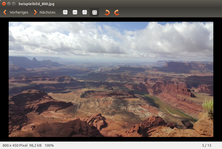

Eye of GNOME
Dieser Artikel wurde für die folgenden Ubuntu-Versionen getestet:
Ubuntu 16.04 Xenial Xerus
Ubuntu 14.04 Trusty Tahr
Zum Verständnis dieses Artikels sind folgende Seiten hilfreich:
Eye of GNOME  ist der Standard-Bildbetrachter für die Desktop-Oberfläche Unity und die Desktop-Umgebung GNOME. Das Programm kann eine Reihe von Grafikformaten lesen und schreiben, besitzt eine Diashow-Funktion und einige rudimentäre Bearbeitungsfunktionen wie Drehen oder Spiegeln. Außerdem ist EoG durch Plugins erweiterbar.
ist der Standard-Bildbetrachter für die Desktop-Oberfläche Unity und die Desktop-Umgebung GNOME. Das Programm kann eine Reihe von Grafikformaten lesen und schreiben, besitzt eine Diashow-Funktion und einige rudimentäre Bearbeitungsfunktionen wie Drehen oder Spiegeln. Außerdem ist EoG durch Plugins erweiterbar.
Folgende Bildformate werden lesend unterstützt:
ANI - Animation
BMP - Windows Bitmap
GIF - Graphics Interchange Format
ICO - Windows Icon
JPG - Joint Photographic Experts Group
PCX - PC Paintbrush
PNG - Portable Network Graphics
PNM - Portable Anymap from the PPM Toolkit
RAS - Sun Raster
SVG - Scalable Vector Graphics
TGA - Targa
TIFF - Tagged Image File Format
WBMP - Wireless Bitmap
XBM - X Bitmap
XPM - X Pixmap
Installation¶
Eye of GNOME ist bei Ubuntu und Ubuntu GNOME vorinstalliert. Nutzt man eine andere Desktop-Umgebung, so kann man EoG wie folgt nachinstallieren [1]:
eog
 mit apturl
mit apturl
Paketliste zum Kopieren:
sudo apt-get install eog
sudo aptitude install eog
Bedienung¶
Das Programm wird automatisch geöffnet, wenn man auf eine Bilddatei doppelt klickt. Im Unity-Menü kann man das Programm entweder durch die Eingabe von "bildbetrachter" oder "eye of gnome" starten.
Auch wenn der Funktionsumfang gleich ist, unterscheidet sich die Optik des Programms unter Ubuntu 16.04 und Ubuntu 14.04 deutlich.
|  |
| EOG unter Ubuntu 16.04 |
|  |
| EOG unter Ubuntu 14.04 |
Unter 16.04 befinden sich am linken und rechten Bildrand jeweils Pfeile, mit denen zum vorherigen/nächsten Bild geblättert werden kann. Mit einem Klick auf das + links oben erscheint ein Schieberegler, mit dem die Ansicht des Bilds vergrößert oder verkleinert werden kann. Am unteren Bildschirmrand befinden sich zwei Schaltflächen zum Drehen des Bilds.
Unter 14.04 befinden sich in einer Liste oberhalb des Bilds die Schaltflächen zum Vor- und Zurückblättern, Vergrößern/Verkleinern des Bilds und auch zum Drehen.
Bildbearbeitung¶
Bilder können gedreht und gespiegelt werden. Außerdem gestattet das Programm den Export von Bildern in ein anderes Dateiformat.
Metadaten¶
Der Bildbetrachter kann Metadaten wie z.B. die Exif-Daten von Bildern anzeigen. Darin sind u.a. Informationen zur Kamera (Modell), Bilddaten (Aufnahmedatum, Kompression und Auflösung), Aufnahmebedingungen (Belichtungszeit, Programm, Blendeneinstellung etc.), Herstellernotizen und sonstige Daten gespeichert.
Die Metadaten werden angezeigt, wenn man mit
Strg +
F9 die Seitenleiste aktiviert oder mit der rechten Maustaste  ins Bild klickt und dann "Eigenschaften" auswählt.
ins Bild klickt und dann "Eigenschaften" auswählt.
Sollten das Bild bearbeitet worden sein, bleiben alle vorhandenen Metadaten erhalten und werden entsprechend angepasst.
Export¶
Im Programm geöffnete Bilder können durch "Datei -> Speichern unter..." in einem vom Bildbetrachter unterstützten Format gespeichert werden:
BMP - Windows Bitmap
ICO - Windows Icon
JPG - Joint Photographic Experts Group
PNG - Portable Network Graphics
Zusatzfunktionen¶
Diashow¶
Um die Bildersammlung als Diaschau zu betrachten, muss man diese unter "Ansicht -> Diashow" oder über einen Druck auf die Taste F5 starten.
Drucken¶
Um einen Ausdruck des gerade betrachteten Bildes zu machen, kann man unter "Datei -> Drucken..." wählen.
Hintergrundbild¶
Möchte man das gerade betrachtete Bild als Hintergrund für den Desktop nutzen, wählt man unter "Bild -> Als Hintergrundbild verwenden" aus.
Vollbild¶
Um das Bild im Vollbild zu betrachten, wählt man "Ansicht -> Vollbild" oder drückt die Taste F11 . Durch Drücken der Taste Esc kann man diesen Modus wieder verlassen.
Erweiterungen¶
Die Möglichkeiten von Eye of GNOME können durch die Installation zusätzlicher Plugins erweitert werden. Dazu muss das folgende Paket installiert werden:
eog-plugins (universe)
mit apturl
Paketliste zum Kopieren:
sudo apt-get install eog-plugins
sudo aptitude install eog-plugins
Nach einem Neustart von Eye of GNOME können dann unter "Bearbeiten -> Einstellungen -> Plugins" folgende Erweiterungen aktiviert werden:
Diaschau-Mischer - Mischen der Bilder im Diaschau-Modus
Exif-Anzeige - Zeigt Kameraeinstellungen und Histogramme an
Flickr Uploader - Hochladen Ihrer Bilder zum Flickr-Bilderdienst
Karte - Die Geoposition eines Bildes in einer Karte anzeigen
Python-Konsole - Python-Konsole für Eye of GNOME
Vergrößerung auf Bildbreite anpassen
Weitere Informationen zu den Plugins stehen im EOG-Wiki .
 Liste weiterer Bildbetrachter
Liste weiterer Bildbetrachter- Erstellt mit Inyoka
-
 2004 – 2017 ubuntuusers.de • Einige Rechte vorbehalten
2004 – 2017 ubuntuusers.de • Einige Rechte vorbehalten
Lizenz • Kontakt • Datenschutz • Impressum • Serverstatus -
Serverhousing gespendet von